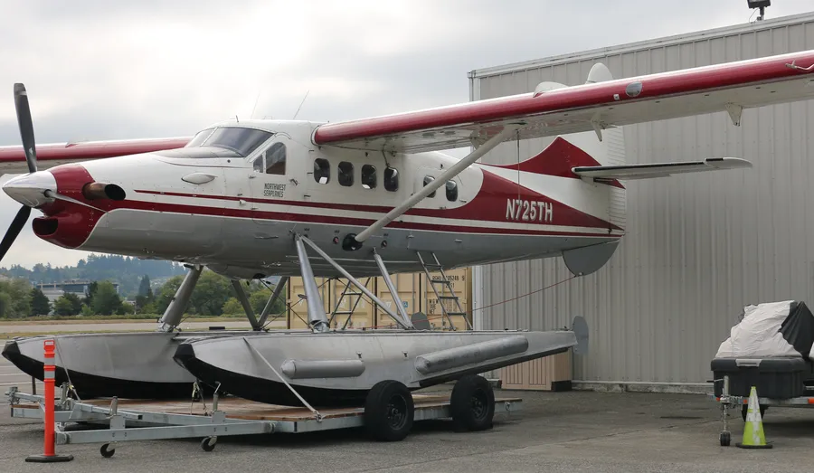

Mutiny Bay Floatplane Crash — de Havilland DHC-3 Otter (N725TH)
Loss of pitch control and water impact that killed all 10 aboard near Whidbey Island, Washington September 4, 2022, 15:09 PDT · Mutiny Bay, near Freeland, WASerious outcome
No survivors
Case summary
A de Havilland DHC-3 Otter floatplane on a scheduled West Isle Air / Friday Harbor Seaplanes passenger run from Friday Harbor to Renton abruptly pitched down and plunged into the water of Mutiny Bay, off Whidbey Island, Washington, killing the pilot and all nine passengers. NTSB investigators found that a clamp nut securing the horizontal stabilizer's trim actuator had unscrewed in flight because its lock ring was missing, letting the stabilizer travel to an extreme nose-down position that made the airplane's pitch uncontrollable.

Single-engine turboprop floatplane
What happened
Source: NTSB Final Report (excerpt)According to ADS-B data, the en route altitude was between 600 and 1,000 ft above mean sea level, and the groundspeed was between 115 and 135 knots. At 1508:40, the altitude was 1,000 ft msl, and the groundspeed had decreased to 111 knots. Based on performance calculations, at 1508:43, the airplane pitched up about 8° and then abruptly pitched down about 58°. The data ended at 1508:51, when the airplane’s altitude was 600 ft msl and the estimated descent rate was more than 9,500 ft per minute. Witnesses near the accident site reported, and security camera video confirmed, the airplane was in level flight before it entered a slight climb and then pitched down. One witness described the descent as “near vertical” and estimated the airplane was in an 85° nose-down attitude before impact with the water. Several witnesses described the airplane as “spinning,” “rotating,” or “spiraling” during portions of the steep descent. The airplane continued in a nose-low, near-vertical descent until it impacted water in Mutiny Bay.
Why it happened
Source: NTSB Final Report"The National Transportation Safety Board determines that the probable cause of this accident was the in-flight unthreading of the clamp nut from the horizontal stabilizer trim actuator barrel due to a missing lock ring, which resulted in the horizontal stabilizer moving to an extreme trailing-edge-down position rendering the airplane’s pitch uncontrollable."
- A missing lock ring allowed the horizontal stabilizer trim actuator's clamp nut to unscrew from its barrel in flight
- No secondary (redundant) retention feature existed to back up the lock ring on the DHC-3 actuator design
- An unapproved moisture seal, installed by maintenance personnel outside manufacturer guidance, increased rotational friction between the clamp nut and eye bolt and likely interfered with proper clamp-up of the assembly
- Manufacturer maintenance documentation lacked clear torque, drilled-hole-count, and inspection criteria for the clamp nut and lock ring installation
Photos & media (3)
NTSB Aviation Investigation Report AIR-23-01, DCA22MA193According to ADS-B data, the en route altitude was between 600 and 1,000 ft above mean sea level, and the groundspeed was between 115 and 135 knots. At 1508:40, the altitude was 1,000 ft msl, and the groundspeed had decreased to 111 knots. Based on performance calculations, at 1508:43, the airplane pitched up about 8° and then abruptly pitched down about 58°. The data ended at 1508:51, when the airplane’s altitude was 600 ft msl and the estimated descent rate was more than 9,500 ft per minute. Witnesses near the accident site reported, and security camera video confirmed, the airplane was in level flight before it entered a slight climb and then pitched down. One witness described the descent as “near vertical” and estimated the airplane was in an 85° nose-down attitude before impact with the water. Several witnesses described the airplane as “spinning,” “rotating,” or “spiraling” during portions of the steep descent. The airplane continued in a nose-low, near-vertical descent until it impacted water in Mutiny Bay.
"The National Transportation Safety Board determines that the probable cause of this accident was the in-flight unthreading of the clamp nut from the horizontal stabilizer trim actuator barrel due to a missing lock ring, which resulted in the horizontal stabilizer moving to an extreme trailing-edge-down position rendering the airplane’s pitch uncontrollable."
- A missing lock ring allowed the horizontal stabilizer trim actuator's clamp nut to unscrew from its barrel in flight
- No secondary (redundant) retention feature existed to back up the lock ring on the DHC-3 actuator design
- An unapproved moisture seal, installed by maintenance personnel outside manufacturer guidance, increased rotational friction between the clamp nut and eye bolt and likely interfered with proper clamp-up of the assembly
- Manufacturer maintenance documentation lacked clear torque, drilled-hole-count, and inspection criteria for the clamp nut and lock ring installation